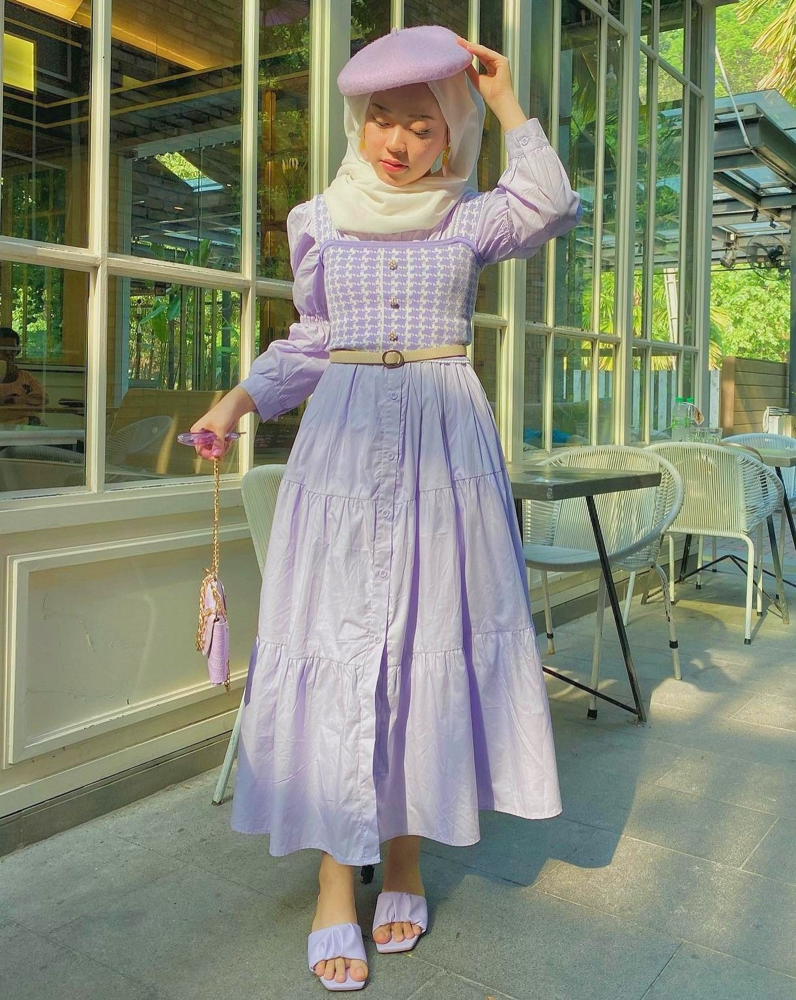
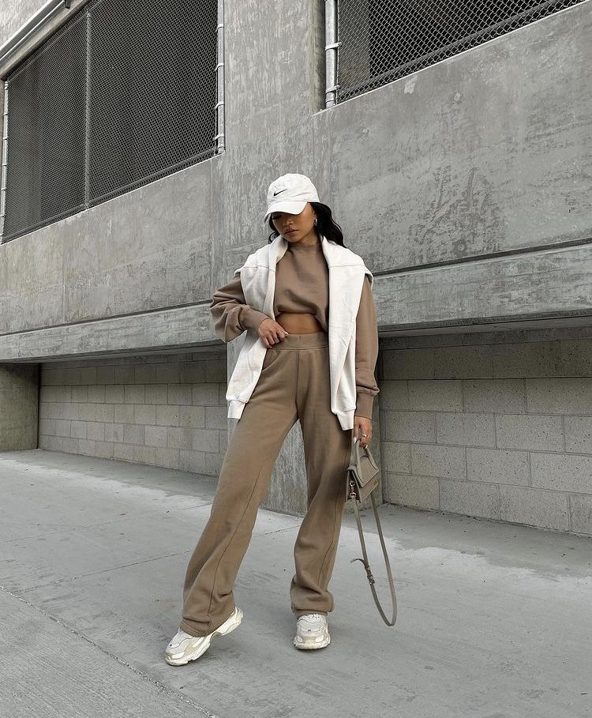
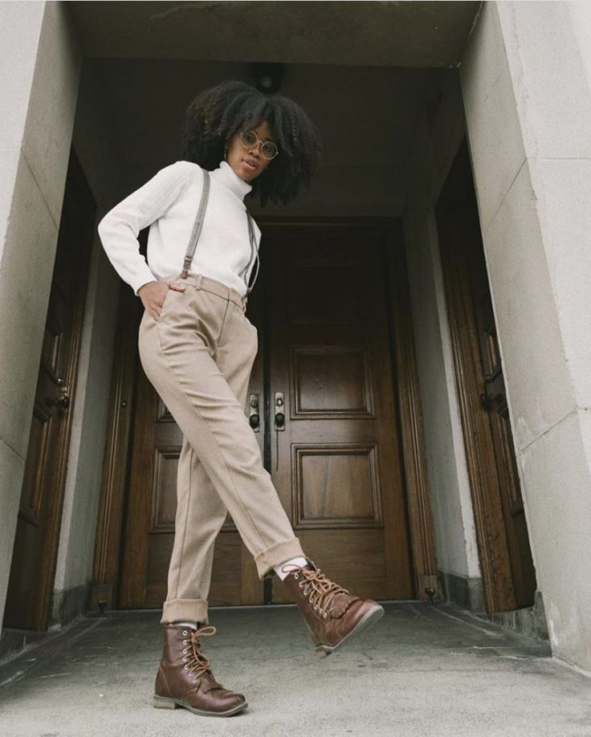

BLOGITE
~FASHION~
Navigating the Latest Fashion Trends: A Peek into Trending Styles
June 8 2023 | By Femi Nyogal Yves

Fashion is an ever-evolving realm where creativity knows no bounds. Each season brings a fresh wave of styles that captivate and inspire. In this blog, we'll take a glimpse into the world of trending fashion styles, highlighting some of the latest and most captivating trends that are making waves in the fashion scene.
Pastel Power: Soft Hues for Every Occasion
Step into a realm where colors whisper and enchant, where subtle shades weave a tapestry of elegance – welcome to the world of Pastel Power. This trend is an ode to the captivating allure of soft hues, a celebration of the gentle magic that pastels bring to every facet of life, from fashion to decor.
Imagine a palette of delicate pinks, serene blues, and tranquil greens, coming together to create a symphony of understated beauty. Pastel Power is more than just a chromatic choice; it's an invitation to embrace the serenity and sophistication that soft hues offer.
Pastel Power effortlessly transcends seasons and occasions. From springtime picnics to winter soirées, these muted tones bring a touch of timeless charm. Whether adorning clothing, accessories, or living spaces, pastels have the unique ability to evoke a sense of tranquility while making a statement.
Wardrobe choices inspired by Pastel Power exude a quiet confidence.
Picture a blush-toned blouse that radiates femininity, a baby blue suit that balances professionalism with charm,
or mint-green sneakers that add a whimsical touch to your step.
These soft hues allow you to express your style with subtlety, creating outfits that capture attention without overwhelming.

Elevated Athleisure: Comfy Meets Chic
Enter the realm of fashion where comfort and style intertwine effortlessly – welcome to the world of elevated athleisure, where the art of looking chic while feeling at ease is masterfully achieved. This trend embodies the fusion of athletic wear and high fashion, offering a harmonious balance between relaxation and sophistication.
Picture this: garments that effortlessly transition from a yoga class to a brunch date, from a morning jog to an evening soirée. Elevated athleisure is more than just clothing; it's a lifestyle that embraces versatility and luxury without compromise. Each piece is a masterpiece of design, carefully crafted to seamlessly bridge the gap between comfort and elegance.
At the heart of elevated athleisure lies the athletically-inspired silhouette. Think sleek leggings, jogger-style pants, and comfortable hoodies, all exquisitely tailored with a modern twist. These are not your ordinary workout clothes – they're a statement of refined relaxation, allowing you to move with ease while radiating an air of sophistication.
Elevated athleisure pays meticulous attention to details. Expect luxurious fabrics that caress your skin, innovative textures that enhance your aesthetic, and thoughtful accents that elevate each ensemble. From subtle logos to strategic stitching, every element contributes to the overall allure, making each piece a work of art.
Accessories play a pivotal role in this trend, adding the final strokes to your stylish canvas. Sleek sneakers, minimalist jewelry, and a well-chosen bag or backpack effortlessly complement your athleisure ensemble, adding a touch of polish and completing your chic look.
Elevated athleisure is more than just a fashion choice; it's a reflection of a dynamic lifestyle that embraces both the active and
the elegant. It celebrates the power of movement and the freedom to express your individuality without sacrificing comfort or grace.
So, whether you're running errands, meeting friends, or simply enjoying a leisurely day, elevated athleisure invites you to embrace
a new era of fashion where comfort and style coexist harmoniously.

Sustainable Fashion: Ethical Elegance
Step into a world where style embraces conscience, where each garment tells a story of ethical elegance – welcome to the realm of sustainable fashion. More than just a trend, sustainable fashion is a movement that intertwines beauty with responsibility, creating a harmonious symphony between personal style and the well-being of the planet.
Imagine clothing that not only adorns your body but also aligns with your values. Sustainable fashion is a celebration of thoughtful choices, from the materials used to the labor practices employed. Each piece is a testament to the dedication of designers and artisans who prioritize environmental stewardship and fair treatment of workers.
At the heart of sustainable fashion lies a commitment to reduce, reuse, and recycle. Garments made from organic, eco-friendly fabrics whisper tales of a greener future, where natural resources are cherished and preserved. Recycling and upcycling breathe new life into discarded materials, creating unique pieces that radiate charm and authenticity.
Sustainable fashion champions timeless designs that transcend fleeting trends. Each garment is crafted to stand the test of time, a versatile companion that effortlessly transitions between seasons and occasions. The emphasis on durability ensures that your wardrobe becomes a collection of treasures, not a revolving door of disposables.
Ethical elegance extends beyond the clothes themselves. Accessories and footwear, too, are curated with a conscience. From cruelty-free leather alternatives to locally sourced materials, each component is chosen mindfully, contributing to the tapestry of sustainability that defines the movement.
Sustainable fashion isn't just about what you wear; it's a declaration of your values,
a reflection of your belief in a better world. As you embrace ethical elegance, you become part of a global community that
seeks to leave a positive mark on the fashion industry and the planet. It's an invitation to adorn yourself with garments that
not only elevate your style but also contribute to a more harmonious and beautiful future for all.
Maximalist Accessories: More is More
In a world where self-expression knows no bounds, step into the realm of maximalist accessories, where extravagance takes center stage, and the mantra "more is more" reigns supreme. This trend is a flamboyant celebration of boldness, a symphony of creativity that invites you to adorn yourself with an abundance of accessories that tell a story as vibrant as your personality.
Imagine layer upon layer of necklaces, a wrist adorned with an eclectic mix of bracelets, and fingers dancing with an array of oversized rings. Maximalist accessories are a collage of opulence, where each piece contributes to a mesmerizing visual narrative that is uniquely yours.
Maximalism defies the notion of restraint. Earrings cascade from earlobes like chandeliers,
statement brooches embellish lapels, and chunky belts cinch outfits with audacity. Each accessory is a declaration,
an exclamation mark that punctuates your style choices with confidence and verve.

Nostalgic Revival: Retro is In
Travel back in time as fashion takes a captivating journey into the past with the Nostalgic Revival trend – a triumphant return of all things retro. From iconic styles of bygone eras to vintage-inspired designs, this trend is a homage to the past that effortlessly weaves its charm into the tapestry of modern fashion.
Picture an ensemble that transports you to the glamorous 1950s, where polka dots and A-line silhouettes reign supreme. Or embrace the psychedelic prints and flared pants of the 1970s, dancing to the rhythm of disco. From bell-bottoms to bold prints, from puffy sleeves to platform shoes, Nostalgic Revival revives the essence of yesteryears with a contemporary twist.
Accessories play a pivotal role in this retro resurgence. Think oversized sunglasses that channel Audrey Hepburn's elegance, chunky gold chains reminiscent of the '80s, and hair scarves that capture the free-spirited vibe of the '70s. Each accessory becomes a nostalgic nod that adds a touch of vintage allure to your modern ensemble.
Nostalgic Revival isn't just about dressing the part; it's about channeling the spirit of a bygone era. It's an invitation to celebrate the past while creating a style statement that's uniquely your own. Mixing and matching vintage finds with modern pieces allows you to create an ensemble that's a nod to history while showcasing your personal flair.

Gender-Fluid Fashion: Breaking Boundaries
In a world where individuality and self-expression reign, a groundbreaking trend emerges – welcome to the realm of Gender-Fluid Fashion, where style knows no binary boundaries. This movement is a celebration of inclusivity, challenging traditional norms and redefining the way we perceive clothing as a means of self-identity.
Imagine a fashion landscape where the lines between masculinity and femininity blur into a harmonious spectrum. Gender-Fluid Fashion is a canvas where anyone can paint their unique story, adorned in garments that transcend societal expectations. From tailored suits with delicate lace accents to flowy dresses paired with edgy boots, this trend defies convention and embraces the beauty of fluidity.
Accessories play a pivotal role in this movement, serving as the punctuation marks in the language of self-expression. Think bold statement jewelry that adds an audacious touch to any ensemble, or a sleek tie that effortlessly complements a flowing blouse. Each accessory becomes a brushstroke that contributes to the masterpiece of your gender-fluid identity.
Gender-Fluid Fashion is a powerful reminder that clothing is not confined by labels. It's an invitation to explore, experiment, and celebrate your true self without limitations. By embracing garments traditionally associated with different genders, you're breaking down barriers and reimagining the concept of fashion as a form of liberation.
This trend is more than just a sartorial choice; it's a movement that empowers individuals to authentically express themselves. It challenges the notion of what is considered "appropriate" or "acceptable," paving the way for a future where fashion knows no gender constraints.
As you step into the realm of Gender-Fluid Fashion, you're not just selecting clothing; you're participating in a revolution that champions diversity, equality, and self-discovery. This trend serves as a testament to the resilience of the human spirit and a celebration of the beautiful mosaic of identities that make up our world. So, whether you're donning a tailored blazer, a flowing tunic, or a combination of both, Gender-Fluid Fashion invites you to break free from the confines of labels and embark on a journey of style that's as unique and multifaceted as you are.
Trends in fashion provide an exciting opportunity to experiment with your personal style and showcase your unique personality. Whether you're drawn to athleisure's effortless charm, sustainable fashion's ethical allure, or the nostalgic embrace of retro styles, the world of fashion is yours to explore and make your own. Remember, trends may come and go, but true style is a reflection of your inner creativity and confidence. Embrace what resonates with you, have fun with fashion, and express yourself boldly through the captivating language of clothing.

Popular Posts

MARCH 1 2023
Shining Bright: Exploring the Hottest Trending Jewelry Pieces

JUNE 20 2023
Mastering the Art of Organization: Your Guide to a Clutter-Free Life

AUG 21 2023
Essential Items Every Woman Should Have in Her Bag